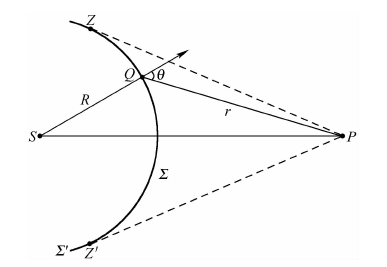
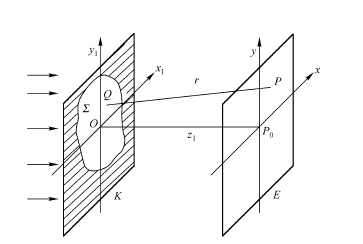

远场传播模块
1. 基尔霍夫衍射与瑞利-索末菲衍射
惠更斯-菲涅耳原理可表述为：波面上的每一点都可以看作一个发出球面次级扰动（子波）的次级波源，波场中任一点的扰动，都可看作是所有次级波源所造成的次级扰动的相干叠加。
对于其数学表达式，根据下图进行描述：

考虑光源 \(S\)发出的球面波对 \(P\) 点的作用。
选取 \(S\) 与 \(P\) 之间的一个波面 \(\Sigma\) ，用这个波面上各点发出的子波在 \(P\) 点相干叠加的结果表示 \(S\) 对 \(P\) 的作用。
设 \(S\) 在 \(\Sigma'\) 上任一点 \(Q\) 的复振幅为 \(\tilde{E}_Q=\frac{A}{E}e^{ikR}\) 其中 \(A\) 是距离 \(S\) 单位距离处的振幅， \(R\) 是波面 \(\Sigma'\) 的半径.
另外，在 \(Q\) 点取波面的面元 $d\sigma$ ，菲涅耳认为， \(d\sigma\) 发出的子波在 \(P\) 点产生的复振幅与入射波在面元上的复振幅 \(\tilde{E}_Q\)，面元大小 \(d\sigma\) ，倾斜因子$K(\theta)$成正比。
注：倾斜因子\(K(\theta)\) 表示子波的振幅随面元法线 \(QP\) 的夹角 \(\theta\)的变化，其中 \(\theta\) 称为衍射角。
综上， \(d\sigma\) 在 \(P\) 点的复振幅可表示为 \(d\tilde{E}(P)=CK(\theta)\frac{Ae^{ikR}e^{ikr}}{Rr}d\sigma\)
其中 \(C\) 是常数，\(R\)是 \(QP\) 间的距离
那么在上图中\(ZZ\)间的波面 \(Σ\)上（光孔范围内），各面元发出的子波对 \(P\) 点产生复振幅的总和为 \(\tilde{E}(P)=C\frac{Ae^{ikR}}{R}\iint_{\Sigma}{\frac{e^{ikr}}{r}K(\theta)d\sigma}\)
实际上，上式当中选取的积分的面并不仅限于波面，可以更一般地选取 \(SP\) 之间任何一个曲面（或平面），假设 \(S\) 在所选取的面上的复振幅分布为 \(\tilde{E}(Q)\) ，那么上式化为 \(\tilde{E}(P)=C\iint_{\Sigma}{\tilde{E}(Q)\frac{e^{ikr}}{r}K(\theta)d\sigma}\)
不同的倾斜因子对应不同的公式：
基尔霍夫公式
\(K(\theta)=\frac{cos(\theta)+1}{2}\)
第一种瑞利–索末菲公式
\(K(\theta)=cos(\theta)\)
第二种瑞利–索末菲公式
\(K(\theta)=1\)
在实际问题中，\(\theta\)通常较小，三个公式的倾斜因子均接近1。
2. 菲涅尔衍射
傍轴近似

在傍轴情况（当光束发散较小且观测区域的宽度远小于光传播距离）下，积分函数 \(\frac{e^{jkr}}{r}\) 中的分母 \(r\) 可以由 \(z_1\) 来代替，因为这对于光波振幅没有大的影响。但 \(r\) 的变化对相位影响依然不可忽略，因此在复指数当中应保留。
故衍射公式改写为： \(\tilde{E}(P)=\frac{1}{i\lambda d}\iint_{\Sigma}{\tilde{E}(Q)e^{ikr}d\sigma}\)
菲涅尔近似
对 \(e^{jkr}\) 中的 \(r\) 进行泰勒展开， \(r\approx z_1[1+\frac{(x-x_1)^2+(y-y_1)^2}{2z_1^2}-\frac{[(x-x_1)^2+(y-y_1)^2]^2}{8z_1^4}+\cdot\cdot\cdot]\) 第两项之后的值过小，只保留泰勒展开的前两项，故 \(r\approx z_1+\frac{(x-x_1)^2+(y-y_1)^2}{2z_1}\) 这种近似就是菲涅耳近似，在菲涅耳近似条件下对衍射现象的研究称为菲涅耳衍射： \(\tilde{E}(x,y)=\frac{e^{ikr}}{i\lambda z_1}\iint_{-\infty}^{+\infty}{\tilde{E}(x_1,y_1)e^{\frac{ik}{2z_1}[(x-x_1)^2+(y-y_1)^2]}dx_1dy_1}\)
3. 夫琅禾费衍射
在菲涅耳近似的基础上，如果光孔屏与接收屏的距离更远，则可以得到更进一步的近似。
在菲涅尔近似中， \(r= z_1+\frac{x^2+y^2}{2z_1}-\frac{xx_1+yy_1}{z_1}+\frac{x_1^2+y_1^2}{2z_1}\) 其中，其中第四项取决于光孔线度 \(x_1^2+y_1^2\)相对于两屏间的距离\(z_1\)的大小。当 $z_1$ 充分大，以至于第四项对相位的影响远小于 \(\pi\) 时，第四项可以忽略，则近似认为： \(r= z_1+\frac{x^2+y^2}{2z_1}-\frac{xx_1+yy_1}{z_1}\) 这就是夫琅和费近似，在夫琅禾费近似条件下对衍射现象的研究称为夫琅禾费衍射。
那么将 \(r\) 的近似式代入衍射公式得到： \(\tilde{E}(x,y)=\frac{e^{ikr}}{i\lambda z_1}e^{\frac{ik}{2z_1}{x^2+y^2}}\iint_{-\infty}^{+\infty}{\tilde{E}(x_1,y_1)e^{-i2\pi(x_1\frac{x}{\lambda z_1}+y_1\frac{y}{\lambda z_1})}dx_1dy_1}\)